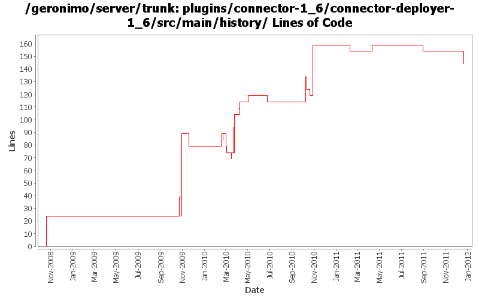

[root]/plugins/connector-1_6/connector-deployer-1_6/src/main/history

| Author | Changes | Lines of Code | Lines per Change |
|---|---|---|---|
| Totals | 34 (100.0%) | 293 (100.0%) | 8.6 |
| rickmcguire | 11 (32.4%) | 171 (58.4%) | 15.5 |
| djencks | 9 (26.5%) | 96 (32.8%) | 10.6 |
| gawor | 11 (32.4%) | 20 (6.8%) | 1.8 |
| violalu | 1 (2.9%) | 5 (1.7%) | 5.0 |
| dwoods | 1 (2.9%) | 1 (0.3%) | 1.0 |
| xuhaihong | 1 (2.9%) | 0 (0.0%) | 0.0 |
GERONIMO-6240 Fix build up to system-database. Builder not found for it
14 lines of code changed in 1 file:
Update dependencies.xml file, including bval and commons-jexl changes
0 lines of code changed in 1 file:
GERONIMO-5885 Upgrade karaf from 2.1.2 to 2.2.1-SNAPSHOT
5 lines of code changed in 1 file:
GERONIMO-5801 jaxb-impl bundle should export com.sun.* packages with a version
Switching to snapshot version.
0 lines of code changed in 1 file:
use the new servicemix javassist bundle
5 lines of code changed in 1 file:
fix build error caused by javassist version problem
5 lines of code changed in 1 file:
switch to released version of activemq
40 lines of code changed in 1 file:
update to the latest jaspi version
0 lines of code changed in 1 file:
dependency cleanup
0 lines of code changed in 1 file:
GERONIMO-5230 Add Bean Validation Support to the connector 1.6 implementation.
Changes to Geronimo base.
20 lines of code changed in 1 file:
GERONIMO-5190 use openejb-jee jaxb tree for spec dds
0 lines of code changed in 1 file:
move xbean dependencies definitions to root pom so that maven does not download j2ee pom first
5 lines of code changed in 1 file:
ejb spec needs jaxrpc and jaxrpc needs servlet
5 lines of code changed in 1 file:
GERONIMO-5242 Make spec version naming conventions consistent.
Updating trunk to new spec numbering rules.
1 lines of code changed in 1 file:
GERONIMO-5113: Mostly complete support for @DataSourceDefinition(s) annotations
5 lines of code changed in 1 file:
GERONIMO-4360 connector 1.6 merge annotations with ra.xml
25 lines of code changed in 1 file:
Fix stax/jaxb problems when starting the framework assembly.
5 lines of code changed in 1 file:
dependencies updates
0 lines of code changed in 1 file:
GERONIMO-5201 Repace service versions of spec bundles with Geronimo latest versions.
25 lines of code changed in 1 file:
GERONIMO-5190, GERONIMO-4360. Make jaxb dd objects fit into deployment system a little bit, and add some incomplete connector annotation support
5 lines of code changed in 1 file:
GERONIMO-4971: Initial OBR integration for Aries Applications. Some of the OBR resolver code is based on the resolver in Apache Aries
0 lines of code changed in 1 file:
add osgi api to plugins pom
0 lines of code changed in 1 file:
obr and asm dependencies updates
0 lines of code changed in 1 file:
update dependencies for obr addition
5 lines of code changed in 1 file:
GERONIMO-5152 mostly, use annotations for gbeans
0 lines of code changed in 1 file:
updates to get trunk building again
5 lines of code changed in 1 file:
GERONIMO-4971 include obr repository.xml in every plugin, and install it into an obr instance when the plugin is installed. Also update the aries plugin and build it. The framework geronimo-obr module is written by Jarek Gawor with minor changes
5 lines of code changed in 1 file:
cleanup connector stuff a bit
0 lines of code changed in 1 file:
More plugin cleanup
65 lines of code changed in 1 file:
regenerate dependencies for a couple of plugins
0 lines of code changed in 1 file:
plugins/connector-1_6 builds
18 lines of code changed in 1 file:
update other XML files with embedded versions from 2.2-SNAPSHOT to 3.0-SNAPSHOT
1 lines of code changed in 1 file:
GERONIMO-4692 the last few dependencies.xml sorted
5 lines of code changed in 1 file:
GERONIMO-4360 make copy of connector plugin area for 1.6 spec implementation work. Hopefully the diff part of this change can be reverted when we actually move to 1.6 spec
24 lines of code changed in 1 file: